# Dies ist ein Kommentar
# Packages installieren install.packages('tidyverse')
# Diese Funktion müssen wir für alle noch nicht herunntergeladenen Packages
# anwenden. Weitere Packages im Skript: 'rempsyc', 'haven', 'car', 'effectsize'
# ,'psych', 'GGally', 'afex', 'emmeans', 'boot'
# Packages laden
library(tidyverse) # All-around package
library(rempsyc) # Convenience-functions für Psychologie
library(haven) # SPSS-Files (.sav) einlesen
library(car) # Anova
library(afex) # Anova
library(emmeans) # Post Hoc Tests
library(effectsize) # Effektstärkten
library(psych) # All-around package für Statistik
library(GGally) # Korrelationsmatrix
library(lm.beta) # Standardiertes Regressionsgewicht
library(flextable) # Tabelle in Word konvertieren
library(broom) # Für schöne lm-Tabelle
library(boot) # BootstrappingStatistik Leitfaden R
Vorwort
Dieser Leitfaden für statistische Datenanalyse in R soll als ergänzende Ressource zur Lehre an der Universität Graz dienen. Er richtet sich speziell an Studierende, die R für Bachelor- oder Masterarbeiten verwenden wollen, oder sich einfach mit den Grundlagen und Anwendungen statistischer Methoden in R vertraut machen möchten.
Ziel ist es, eine kompakte und verständliche Anleitung bereitzustellen, die das eigenständige Arbeiten mit R erleichtert. Ich erhebe keinen Anspruch auf absolute Richtigkeit oder Vollständigkeit der Inhalte. Der Leitfaden wird regelmäßig aktualisiert. Falls Ihnen Fehler auffallen oder Sie Verbesserungsvorschläge haben, freue ich mich über eine Rückmeldung per E-Mail (paul.sedlmayr@uni-graz.at).
Ich hoffe, dass dieser Leitfaden einen nützlichen Beitrag zum Verständnis statistischer Methoden in R leistet und die Anwendung in der Praxis erleichtert.
Diese Seite ist noch nicht fertig gestellt.
Einführung
Installation & Laden von Packages
Im ersten Schritt installieren und laden wir Packages. Diese enthalten Funktionen, welche wir später nutzen werden. Wenn man ein Package, zum Beispiel das Package tidyverse, zum ersten Mal verwendet, muss man es mit der Funktion install.packages("tidyverse") installieren. Anschließen kann man es mit der Funktion library(tidyverse) laden.
Um die Packages im Folgenden Code zu installieren, entferne das # um den Kommentar #install.packages("tidyverse") zu einer Zeile Code zu verwandeln.
Grundlegende Operatoren
Mit dem assignment operator <- kann man Variablen erstellen. Den Inhalt der Variable kann man ganz einfach einsehen, indem man den Namen der Variable in der Konsole / im Skript ausführt. Alternativ kann man die Funktion print() am jeweiligen Objekt verwenden. Die Funktion c() wird verwendet wenn wir einzelne Objekte zu einem Vektor zu kombinieren. Dies bietet viele Möglichkeiten, z.B. wenn wir mehrere Zeilen oder Spalten aus einer Daten-Tabelle (“Dataframe”) verwenden wollen df[c("Reihe_1", "Reihe_2"), c("Spalte_1", "Spalte_2")].
# Dies ist ein Kommentar
x <- 10 # oder x = 10
x[1] 10text_y <- "Hello"
text_z <- "WORLD"
# Print: um ein Objekt zu 'drucken'
print(text_y)[1] "Hello"text_y_z <- c(text_y, text_z)
text_y_z[1] "Hello" "WORLD"Der “Pipe-Operator” %>% aus dem tidyverse-Package wird verwendet, um eine Funktion an einem Objekt anzuwenden, ohne das Objekt in der Funktion stehen zu haben. Obwohl das nichts am Output verändert, nutzen wir ihn, um eine Struktur im Code zu behalten. Dies ist speziell dann wichtig, wenn man mehrere Funktionen nacheinander anwendet.
Wenn wir beispielsweise eine Tabelle von Autos mtcars 1. nach der Variable mpg (miles per gallon) filtern wollen, 2. bestimmte Variablen auswählen wollen und 3. die Autos dann nach der Leistung (hp) ordnen wollen, brauchen wir nicht zwangsläufig 3 Zeilen Code dafür. Beide Herangehensweisen kommen zum selben Ergebnis
# 1. Normal
cars_filtered <- filter(mtcars, mpg > 20)
cars_selected <- select(cars_filtered, mpg, cyl, hp)
cars_final <- arrange(cars_selected, desc(hp))
# 2. Mit Pipe %>%
cars_final <- mtcars %>%
filter(, mpg > 20) %>%
select(, mpg, cyl, hp) %>%
arrange(, desc(hp))
# Die ersten 3 Reihen anzeigen
head(cars_final, 3) mpg cyl hp
Lotus Europa 30.4 4 113
Mazda RX4 21.0 6 110
Mazda RX4 Wag 21.0 6 110Mathematische Operatoren
Man kann einfache Berechnungen mit Zahlen oder Vektoren durchführen. Mit eckigen Klammern kann man Positionen in einem Vektor auswählen / einsehen.
x^2[1] 100# Vector erstellen
vec_1 <- c(5, 10, 15)
vec_1[1] 5 10 15vec_1[1][1] 5vec_1[2][1] 10vec_1[3][1] 15vec_1 * 2[1] 10 20 30| Operation | Zeichen |
|---|---|
| Addition | + |
| Multiplikation | * |
| Division | / |
| Potenz | ^ |
Files einlesen
Um ein File einzulesen, müssen wir den Pfad des Files angeben. Befinden sich das Skript und File im selben Ordner, genügt für das csv-File “data_1.csv” der Pfad ".//data_1.csv". Um den Pfad zum File nicht händisch schreiben zu müssen, eignet es sich, mit einem Rechtsklick und “Pfad kopieren” den Link zu kopieren. Bei Problemen kann man im Fenster “Environment” (normalerweise rechts oben) auf “Import Dataset” gehen und ein File manuell einlesen.
# CSV-Datei einlesen
df <- read_csv(".//data_1.csv")Um SPSS Files mit dem Typ .sav einzulesen, kann man folgende Funktion aus dem haven-Package verwenden:
# SAV-Datei einlesen
library(haven) # Falls Package noch nicht geladen wurde
df_2 <- read_sav(".//data_2.sav")Überblick verschaffen
Um sich einen Überblick über ein Datenfile zu verschaffen, eignen sich die folgenden Funktionen. Hinweis: $ wird verwendet, um eine Spalte auszuwählen.
# Ersten fünf Zeilen
head(df, 5)# A tibble: 5 × 20
Alter Bildungsstand Rauchen gender Herkunftsland Mathematiknote Statistiknote
<dbl> <dbl> <chr> <dbl> <dbl> <dbl> <dbl>
1 25 4 Nein 1 1 1 1
2 28 5 Nein 1 1 1 2
3 29 2 Ja 2 2 3 NA
4 23 4 Nein 1 1 4 5
5 25 5 Nein 1 2 5 4
# ℹ 13 more variables: wmsva14 <dbl>, Extraversion <dbl>, Neurotizismus <dbl>,
# Offenheit <dbl>, Gewissenhaftigkeit <dbl>, Verträglichkeit <dbl>, IQ <dbl>,
# BDI <dbl>, BDI_z2 <dbl>, BDI_c <dbl>, bedingung <chr>, correct_items <dbl>,
# confidence <dbl>colnames(df) [1] "Alter" "Bildungsstand" "Rauchen"
[4] "gender" "Herkunftsland" "Mathematiknote"
[7] "Statistiknote" "wmsva14" "Extraversion"
[10] "Neurotizismus" "Offenheit" "Gewissenhaftigkeit"
[13] "Verträglichkeit" "IQ" "BDI"
[16] "BDI_z2" "BDI_c" "bedingung"
[19] "correct_items" "confidence" summary(df$IQ) Min. 1st Qu. Median Mean 3rd Qu. Max.
64.00 91.00 100.50 99.98 109.25 144.00 table(df$bedingung)
Experimental Kontroll
46 52 Variablen Transformation
Variablen umbennen / umkodieren
# Variable umbenennen nach dem Schema: 'neu' = alt
df <- df %>%
rename(WMS4_delayed_recall = wmsva14)
# Variable transformieren: zu einem Faktor, d.h. Nominalskalenniveau
df$Bildungsstand <- df$Bildungsstand %>%
as_factor()
# Keine Angabe in Variable 'Rauchen' wird zu NA
df$Rauchen[df$Rauchen == "Keine Angabe"] <- NAOft wollen wir nominalskalierte Variablen zu Dummy-Variablen umkodieren. Beispielsweise wollen wir die Zugehörigkeit zur Kontroll- oder Experimentalbedingung numerisch zu 1 und 0 kodieren. Die Dummy-Variable erhält das Label experimentalgruppe mit den Ausprägungen 1 (ja \(\rightarrow\) gehört zur Experimentalgruppe) und 0 (nein \(\rightarrow\) gehört nicht zur Experimentalgruppe). Am besten wählt man ein informatives Label, also eines, welches den Namen der Referenzgruppe beinhaltet. Wenn wir die Variable nur gruppe nennen würden, wäre es nicht klar, welcher Wert zu welcher Gruppe gehört.
# Rekodieren zu Dummy Variable
df <- df %>%
mutate(experimentalgruppe = case_when(bedingung == "Experimental" ~ 1, bedingung ==
"Kontroll" ~ 0, TRUE ~ NA_real_ # NA für fehlende Werte
))z-Standardisierung & Zentrierung
mutate() wird häufig verwendet, um Variablen zu transformieren. Um eine z-standardisierte Variable (hier: BDI_z) aus der herkömmlichen Variable (hier: BDI) zu erstellen, subtrahieren wir den Wert vom Mittelwert (“zentrieren”) und teilen ihn durch die Standardabweichung (\(z_i = \frac{x_i - \bar x}{s}\)) [^Footnote]. Alternativ können wir auch die Funktion scale() verwenden.
df <- df %>%
mutate(BDI_z2 = ((BDI - mean(BDI))/sd(BDI)))In der Regression kann es sinnvoll sein, Werte zu zentrieren, um die Ergebnisse besser interpretieren zu können. Zentrieren bedeutet, wir verschieben die Punkte im Koordinatensystem. Das wird typischerweise am Mittelwert duchgeführt (\(x_{c,i}=x_i - \bar x\)).
df$BDI_c <- df$BDI - mean(df$BDI)Wide Format vs. Long Format
Das wide und long Format sind die häufigsten Strukturen von Datensätzen. Am besten erkennt man sie an den folgenden Kennzeichen: 1. Im wide Format hat jede Person eine Zeile 2. Im long Format hat jede Person mehrere Zeilen
Andere Statisitkprogramme wie SPSS verwenden oft das wide Format. Im Folgenden lesen wir einen Datensatz ein. Dieser enthält die well-being Werte von Personen mit oder ohne Therapie zu drei Zeitpunkten. Der Datensatz ist im wide Format. Wir haben eine Zeile pro Person und drei Spalten für den Zeitpunkt.
df_3 <- read_csv("data_3.csv")
head(df_3)# A tibble: 6 × 5
participant_id therapy wellbeing_t0 wellbeing_t1 wellbeing_t2
<dbl> <dbl> <dbl> <dbl> <dbl>
1 1 0 58 49 54
2 2 1 40 57 38
3 3 0 43 42 38
4 4 1 30 25 25
5 5 1 29 30 30
6 6 0 56 56 63Wir konvertieren ihn beispielhaft ins long Format, wo eine Person anschließend eine Zeile pro Zeitpunkt, also insgesamt drei hat. Wir wollen die Werte aus den drei Spalten in einer Spalte vereinen (values_to = "wellbeing"). Dafür wählen wir die Spalten aus, welche die Werte enthalten (cols = c()). Zusätzlich erstellen wir eine neue Spalte, welche den Zeitpunkt kodiert (names_to = "time").
# Daten ins long-Format bringen: neue Spalte 'time' mit Zeitpunkt sowie
# 'wellbeing' mit Zellenwerten der alten Spalten
colnames(df_3) <- as.character(colnames(df_3))
df_3_long <- pivot_longer(data = df_3, cols = c("wellbeing_t0", "wellbeing_t1", "wellbeing_t2"),
names_to = "time", values_to = "wellbeing")
head(df_3_long)# A tibble: 6 × 4
participant_id therapy time wellbeing
<dbl> <dbl> <chr> <dbl>
1 1 0 wellbeing_t0 58
2 1 0 wellbeing_t1 49
3 1 0 wellbeing_t2 54
4 2 1 wellbeing_t0 40
5 2 1 wellbeing_t1 57
6 2 1 wellbeing_t2 38Wenn wir die Daten nun zurück ins wide Format bringen wollen, geben wir die Spalte an, welche die unterschiedlichen Zeitpunkte kodiert (names_from = time). Zudem müssen wir die Spalte angeben, welche jene Werte enthält, die wir jetzt wieder auf drei Spalten aufteilen wollen (values_from = "wellbeing"). Wir können zusätzlich angeben, wie zusammen gehörende Werte identifiziert werden sollen (id_cols = "participant_id"). Wir sehen, dass diese Operation uns den Datensatz im ursprünglichen Zustand zurück gibt.
df_3_wide <- pivot_wider(data = df_3_long, names_from = "time", values_from = "wellbeing",
id_cols = "participant_id")
head(df_3_wide)# A tibble: 6 × 4
participant_id wellbeing_t0 wellbeing_t1 wellbeing_t2
<dbl> <dbl> <dbl> <dbl>
1 1 58 49 54
2 2 40 57 38
3 3 43 42 38
4 4 30 25 25
5 5 29 30 30
6 6 56 56 63Deskriptive Statistik
Wir können ganz einfach den Mittelwert und die Standardabweichung von einer Spalte berechnen.
mean(df$Gewissenhaftigkeit)[1] 29.99sd(df$Gewissenhaftigkeit)[1] 10.04384Um uns deskr. Statistiken pro Gruppe ausgeben zu lassen, müssen wir group_by() verwenden.
descriptives <- df %>%
group_by(bedingung) %>%
summarize(M = mean(Gewissenhaftigkeit), SD = sd(Gewissenhaftigkeit), n = n(),
)
descriptives# A tibble: 3 × 4
bedingung M SD n
<chr> <dbl> <dbl> <int>
1 Experimental 29.8 10.6 46
2 Kontroll 29.7 9.35 52
3 <NA> 42 12.7 2Zudem bietet das psych()-Package eine praktische Funktion:
library(psych)
describe(df$Extraversion) vars n mean sd median trimmed mad min max range skew kurtosis se
X1 1 100 30.01 10.01 31.5 30.05 11.12 6 57 51 -0.05 -0.56 1Statistische Verfahren
Die meisten Funktionen statistischer Verfahren sind folgendermaßen aufgebaut:
verfahren(Abhängige_Variable ~ Unabhängige_Variable, data = Datensatz).verfahren(Variable_A, Variable_B).
t-Test
t-Test über einen Mittelwert:
\(H_0:\) Der IQ beträgt in der Population im Durchschnitt einen Wert von 100.
t.test(df$IQ, mu = 100)
One Sample t-test
data: df$IQ
t = -0.0133, df = 99, p-value = 0.9894
alternative hypothesis: true mean is not equal to 100
95 percent confidence interval:
96.99627 102.96373
sample estimates:
mean of x
99.98 t-Test über zwei unabhängige Stichproben:
\(H_0:\) Unterscheiden sich die Kontroll- und Experimentalgrupp in der Gewissenhaftigkeit.
t.test(Gewissenhaftigkeit ~ bedingung, data = df)
Welch Two Sample t-test
data: Gewissenhaftigkeit by bedingung
t = 0.055123, df = 90.395, p-value = 0.9562
alternative hypothesis: true difference in means between group Experimental and group Kontroll is not equal to 0
95 percent confidence interval:
-3.925742 4.149823
sample estimates:
mean in group Experimental mean in group Kontroll
29.80435 29.69231 t-Test über zwei abhängige Stichproben:
\(H_0:\) Das well-being hat sich durch die Intervention nicht verändert.
t.test(df_3$wellbeing_t0, df_3$wellbeing_t1, paired = TRUE)
Paired t-test
data: df_3$wellbeing_t0 and df_3$wellbeing_t1
t = -4.2274, df = 119, p-value = 4.661e-05
alternative hypothesis: true mean difference is not equal to 0
95 percent confidence interval:
-5.359629 -1.940371
sample estimates:
mean difference
-3.65 Voraussetzungen t-Test
Statistische Voraussetzungen
Beim Testen der Voraussetzungen können wir entweder deskriptivstatistische oder inferenzstatistische Verfahren verwenden. Deskriptivstatistisch kann man die Verfahren mit Plots untersuchen (z.B. Residual Plots, QQ Plots). Inferenzstatistiche Verfahren werden mit Tests durchgeführt (z.B. Kolmogorov-Smirnov Test). Beide Herangehensweisen haben ihre Probleme: 1. Deskriptivstatistische Verfahren sind subjektiv 2. Inferenzstatistische Verfahren haben eine geringe Power in kleinen Stichproben, was dazu führt, dass sie Verletzungen nicht zeigen. In größeren Stichproben haben sie eine hohe Power und werden auch bei geringfügigen Verletzungen signifikant. Das ist ungünstig, da die Verletzungen vor allem in kleinen Stichproben relevant sind. In großen Stichproben und balancierten Designs sind Verfahren wie die ANOVA einigermaßen robust gegen einige der Verletzungen.
Ich persönlich würde die deskriptivstatistischen Verfahren empfehlen. Im Zweifel kann man diese in Kombination mit inferenzstatistischen Verfahren verwenden.
Was tun bei Verletzungen?
Verletzungen sollten immer transparent berichtet werden. Informiere dich darüber, wie sensibel das verwendete statistische Verfahren auf solche Verletzungen reagiert. Falls Korrekturen vorgenommen werden (z.B. robuste Tests, Transformationen), ist es sinnvoll, die Analyse mit und ohne Korrektur durchzuführen und beide Ergebnisse anzugeben. Ein robuster Effekt sollte sich unter beiden Bedingungen zeigen. Dies ist z.B. hilfreich, wenn unklar ist, ob Ausreißer das Ergebnis verzerren. Ergänzend können simulationsbasierte Verfahren wie Bootstrapping oder Randomization Tests eingesetzt werden. Diese reduzieren die Abhängigkeit von theoretischen Annahmen und können die Robustheit der Ergebnisse erhöhen.
Normalverteilung
Histogram
Mit einem Histogram pro Gruppe können wir die Annahme der Normalverteilung grob untersuchen.
df_bedingung <- df %>% filter(!is.na(bedingung))
ggplot(data = df_bedingung, mapping = aes(x = Gewissenhaftigkeit)) +
geom_histogram(bins = 20, color = "black", fill = "steelblue") +
facet_wrap(~bedingung) + # ein eigenes Histogram pro Gruppe
labs(title = "Histogram", y = "Häufigkeit")
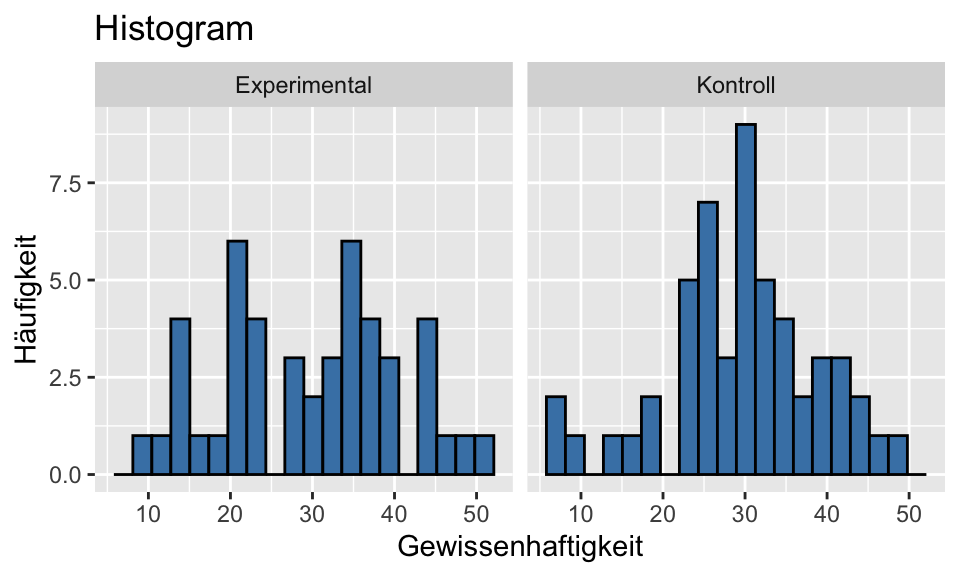
QQ-Plot
Die Normalverteilung können wir mit QQ-Plots testen. Im QQ-Plots wird die Verteilung der Residuen der Stichprobe (durch Punkte gekennzeichnet) mit der Normalverteilung (Strich) verglichen. Die Gerade kennzeichnet eine perfekte Normalverteilung. Je stärker die Punkte von der Linie abweichen, desto stärker weichen die Daten von der Normalverteilung ab.
Zu Beginn können wir das Histogram und die Das Package Rempsyc eine praktische Funktion für QQ-Plots.
QQ-Plot für Gewissenhaftigkeit, für die Kontrol- und Experimentalbedingung
nice_qq(df_bedingung, variable = "Gewissenhaftigkeit", group = "bedingung", title = NULL)
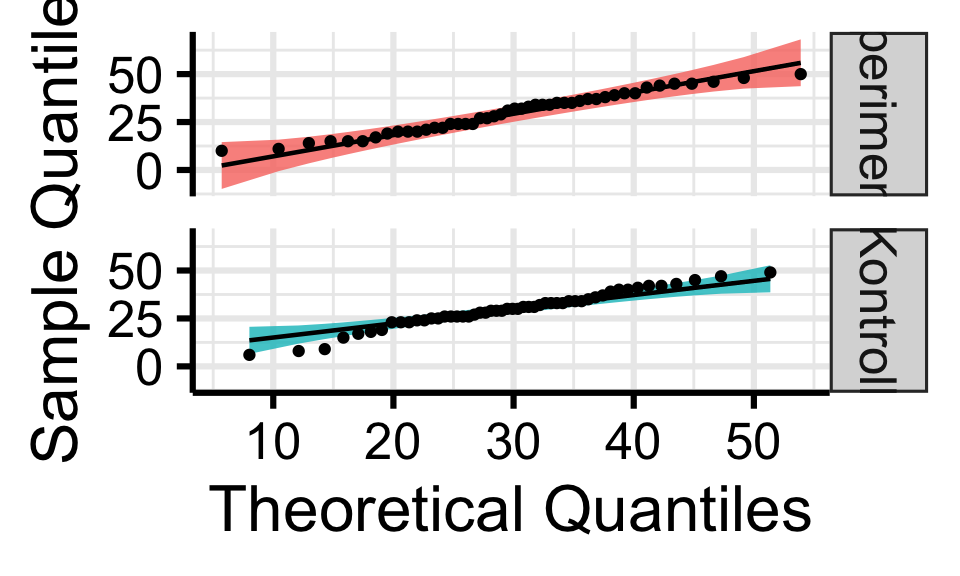
Varianzhomogenität
Diese müssen wir im Fall vom t-Test über zwei unabhängige Stichproben testen. Hier können wir den Levene’s Test verwenden. Dieser testet die \(H_0\), dass die Varianzen der Gruppen homogen sind. Ein signifikanter Wert deutet darauf hin, dass die Varianzen heterogen sind, also eine Verletzung der Annahme der Homoskedastizität.
leveneTest(Gewissenhaftigkeit ~ bedingung, data = df)Levene's Test for Homogeneity of Variance (center = median)
Df F value Pr(>F)
group 1 2.606 0.1097
96 Allgemein ist der t-Test ziemlich robust gegenüber Verletzungen der Voraussetzungen.
Varianzanalyse (ANOVA)
Klassischerweise wird für die ANOVA häufig die Funktion aov() verwendet. Im Folgenden werden wir jedoch das Package afex nutzen, da dies u.a. Vorteile bei unbalancierten Stichproben und bei Messwiederholung (Within-Subject) hat [^Footnote]. Hier können wir die Funktion aov_ez() verwenden.
Diese Funktion benötigt allerdings eine Participant-ID (id =). Falls diese nicht vorhanden ist, können wir sie einfach hinzufügen, wenn es eine Zeile pro Participant gibt (wide Format). Wir zählen von 1 bis zur Gesamtanzahl der AV-Werte (df_wor$Wor) und fügen diese als participant hinzu. Gibt es einen Within-Subject Factor und die Daten sind im long Format ist das etwas komplizierter: bei einer Messwiederholung mit \(m\) Stufen bedeutet das \(m\) Zeilen pro Participant. [^Footnote].
# Daten einlesen
df_wor <- read_delim("Worry143.csv", delim = ";")
# ID Spalte pro Participant hinzufügen
df_wor$participant <- c(1:length(df_wor$Wor))One Between
Hinweis: "es = pes" steht für das partielle Eta-Quadrat (\(\hat \eta_{par}^2\)). Wir können uns auch das generalisierte Eta-Quadrat (\(\hat \eta^2\)) ausgeben (es = "ges").
library(afex)
anova_result <- aov_ez(id = "participant", dv = "Wor", between = "S_E", data = df_wor,
anova_table = list(es = "pes"))
anova_resultAnova Table (Type 3 tests)
Response: Wor
Effect df MSE F pes p.value
1 S_E 2, 159 0.40 22.66 *** .222 <.001
---
Signif. codes: 0 '***' 0.001 '**' 0.01 '*' 0.05 '+' 0.1 ' ' 1# Alternativ mit aov() anova_result <- aov(Wor ~ S_E, data = df_wor)One Within
Für die ANOVA mit Messwiederholung (Within-Subject Factor) können wir die Funktion aov_ez() aus dem afex()-Package verwenden. Diese hat den Vorteil, dass sie bei Verletzung der Spherizität korrigierte Ergebnisse angibt. Im Folgenden Output wird darauf hingewiesen, dass nach einer Verletzung der Spherizität eine Greenhouse-Geisser-Korrektur angewandt wurde. Das können wir auch daran erkennen, dass die Freiheitsgrade keine ganzen Zahlen sind (\(F_{1.63, 193.62}\)).
anova_result <- aov_ez(id = "participant_id", dv = "wellbeing", within = "time",
anova_table = list(es = "pes"), data = df_3_long)
anova_resultAnova Table (Type 3 tests)
Response: wellbeing
Effect df MSE F pes p.value
1 time 1.63, 193.62 76.65 10.08 *** .078 <.001
---
Signif. codes: 0 '***' 0.001 '**' 0.01 '*' 0.05 '+' 0.1 ' ' 1
Sphericity correction method: GG ggplot(df_3_long, aes(x = time, y = wellbeing, fill = time)) + geom_boxplot(alpha = 0.6,
outlier.color = "red", outlier.shape = 16) + labs(title = "Well-being über Zeit",
x = "Zeitpunkt", y = "Well-being Score") + theme_minimal() + theme(legend.position = "none") # Remove legend
Two Between
Hier gerne Datensatz ändern
df_wor <- df_wor %>%
rename(gender = "Geslacht")
df_wor$gender <- df_wor$gender %>%
as_factor()
df_wor$S_E <- df_wor$S_E %>%
as_factor()library(afex)
anova_result <- aov_ez(id = "participant", dv = "Wor", between = c("gender", "S_E"),
data = df_wor, anova_table = list(es = "pes"))
anova_resultAnova Table (Type 3 tests)
Response: Wor
Effect df MSE F pes p.value
1 gender 1, 156 0.40 0.02 <.001 .892
2 S_E 2, 156 0.40 22.50 *** .224 <.001
3 gender:S_E 2, 156 0.40 0.92 .012 .401
---
Signif. codes: 0 '***' 0.001 '**' 0.01 '*' 0.05 '+' 0.1 ' ' 1# Alternativ mit aov() anova_result <- aov(Wor ~ gender * S_E, data = df_wor)Interaction Plot
Mit interaction.plot(UV_1, UV_2, AV) können wir einen Interaktions-Plot erstellen
interaction.plot(df_wor$S_E, df_wor$gender, df_wor$Wor, col = c("blue", "red"), lty = 1,
lwd = 2, legend = TRUE, xlab = "UV S_E", ylab = "AV Wor", trace.label = "Gender")
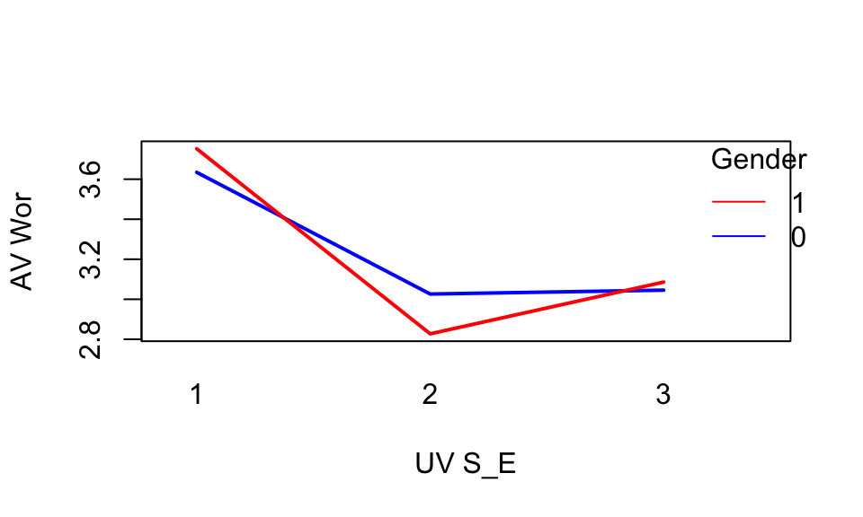
One Between, One Within (Mixed)
Für die ANOVA mit Messwiederholung (Within-Subject Factor) können wir die Funktion aov_ez() verwenden. Diese hat den Vorteil, dass sie bei Verletzung der Spherizität automatisch korrigierte Ergebnisse angibt.
markovits_beghin_2023 <- read_sav("BaseHeuristic.sav")
# Transformation der Spalten zu Faktoren
markovits_beghin_2023$Speed <- markovits_beghin_2023$Speed %>%
as_factor()
markovits_beghin_2023$Condition <- markovits_beghin_2023$Condition %>%
as_factor()
# Mixed anova model
anova_mixed <- aov_ez(id = "ID", dv = "Response", within = "Speed", between = "Condition",
data = markovits_beghin_2023, anova_table = list(es = "pes"), include_aov = TRUE)
summary(anova_mixed)
Univariate Type III Repeated-Measures ANOVA Assuming Sphericity
Sum Sq num Df Error SS den Df F value Pr(>F)
(Intercept) 241.839 1 73.614 494 1622.8981 < 2.2e-16 ***
Condition 0.067 1 73.614 494 0.4475 0.503838
Speed 2.303 1 15.355 494 74.0898 < 2.2e-16 ***
Condition:Speed 0.225 1 15.355 494 7.2294 0.007414 **
---
Signif. codes: 0 '***' 0.001 '**' 0.01 '*' 0.05 '.' 0.1 ' ' 1Effektgrößen
Das partielle Eta-Quadrat \(\hat \eta_{par}^2\) können wir aus den Ergebnissen der gerechneten Varianzanalyse berechnen. Hierfür können wir die eta_squared()-Funktion aus dem Package effectsize verwenden. Diese berechnet zusätzlich ein 95%-iges Konfidenzintervall. Mit dem Parameter partial = TRUE, bzw. generalized = TRUE können wir uns speziell für das partielle oder generalisierte Eta-Quadrat entscheiden.
effectsize::eta_squared(anova_result)# Effect Size for ANOVA (Type III)
Parameter | Eta2 (partial) | 95% CI
------------------------------------------
gender | 1.19e-04 | [0.00, 1.00]
S_E | 0.22 | [0.13, 1.00]
gender:S_E | 0.01 | [0.00, 1.00]
- One-sided CIs: upper bound fixed at [1.00].Das Omega-Quadrat \(\hat \omega^2_{par}\) ist eine korrigierte Alternative zum Eta-Quadrat. Das partielle Eta-Quadrat ist positiv gebiased: unsystematische Zufallsvarianz wird zum Teil für systematische Effektvarianz gehalten. Daher wird das pertielle Omega-Quadrat korrigiert und fällt idR. kleiner aus als das partielle Eta-Quadrat. Wenn \(\hat \omega^2_{par}\) negativ ausfällt, ist es auf 0.00 zu setzen.
omega_squared(anova_result)# Effect Size for ANOVA (Type III)
Parameter | Omega2 (partial) | 95% CI
--------------------------------------------
gender | 0.00 | [0.00, 1.00]
S_E | 0.21 | [0.12, 1.00]
gender:S_E | 0.00 | [0.00, 1.00]
- One-sided CIs: upper bound fixed at [1.00].Geplante Kontraste / Post-Hoc Tests
Geplante Kontraste
Anders als bei post-hoc Tests werden geplante Kontraste formuliert, bevor wir unsere Analysen rechnen bzw. die Daten begutachten. Das bedeutet, wir formulieren eine Hypothese und testen sie dann mit unseren Daten. Solche Erkenntnisse sind deutlich schwerer zu gewichten als Erkenntnisse, auf die wir bei Analyse der Daten explorativ stoßen. Geplante Kontraste sind im Prinzip wie ein t-Test. Wenn wir mehr als zwei Gruppen vergleicht, kann man jedoch die unbekannte Populationsvarianz besser schätzen. Daher verfügen geplante Kontraste über eine höhere Power als wenn man alternativ nur einzelne t-Tests rechnen würde.
Wir untersuchen die a-priori formulierte Hypothese, dass sich Gruppe 1 und Gruppe 2 unterscheiden (unabhängig von Gruppe 3). Hierfür müssen wir die Mittelwerte mit Kontrastgewichten versehen. Wir gewichten den Mittelwert von Gruppe 1 mit +1, von Gruppe 2 mit -1. Nachdem uns Gruppe 3 hier nicht interessiert, wird deren Mittelwert mit 0 gewichtet. Wir können mit contrast() die Kontraste eines Faktors manuell überschreiben.
\(H_0: 1*\mu_1 - 1*\mu_2 + 0 * \mu_3 = 0\)
# One Between ANOVA
anova_result <- aov_ez(id = "participant", dv = "Wor", between = "S_E", data = df_wor,
anova_table = list(es = "pes"))
em <- emmeans(anova_result, ~S_E)
# Kontrast festlegen (z.B.S_E1 - S_E2)
contrast_custom <- contrast(em, method = list(S_E1_vs_S_E2 = c(1, -1, 0)))
summary(contrast_custom) contrast estimate SE df t.ratio p.value
S_E1_vs_S_E2 0.767 0.121 159 6.318 <.0001set.seed(100)
nice_contrasts(response = "Wor", group = "S_E", data = df_wor, effect.type = "cohens.d",
bootstraps = 1000) Dependent Variable Comparison df t p d
1 Wor S_E1 - S_E2 159 6.317994 2.545692e-09 1.2158985
2 Wor S_E1 - S_E3 159 5.171950 6.886308e-07 0.9953423
3 Wor S_E2 - S_E3 159 -1.146044 2.534990e-01 -0.2205562
CI_lower CI_upper
1 0.8087770 1.6690801
2 0.5696748 1.4047849
3 -0.6427655 0.1825833Komplexe Kontraste
In komplexen Kontrasten vergleichen wir anders als bei paarweisen Vergleichen nicht eine Bedingung mir einer anderen, sondern beispielsweise eine Bedingung mit zwei anderen Bedingungen. Das könnte beispielsweise von Interesse sein wenn wir die Gruppen “Keine Therapie”, “Kognitiv-Behaviorale Therapie” und “Gestalt Therapie” haben. Wir wollen untersuchen, ob sich Personen, die nicht in Therapie sind (Gruppe 1) von Personen unterscheiden, die in Therapie sind (Gruppen 2 & 3). Wir gewichten den Mittelwert von Gruppe 1 mit 1 und jene von Gruppen 2 & 3 mit jeweils -0.5. Auf beiden Seiten müssen die Werte gleich groß sein (1 vs. -(0.5+0.5)). Der Wert von 0.5 statt 1 sorgt dafür, dass die Mittelwerte von Gruppen 2 & 3 gemittelt werden (2 * 0.5 = 1). Das negative Vorzeichen bestimmt, welche Gruppe auf welcher Seite des Kontrasts steht.
\(H_0: 1*\mu_1 - 0.5*\mu_2 + 0.5 * \mu_3 = 0\)
df_wor$S_E <- df_wor$S_E %>%
as_factor()
contrast_matrix <- cbind(cond1_vs_cond_2_and_3 = c(1, -0.5, -0.5))
# Die Kontraste für die UV werden überschrieben
contrasts(df_wor$S_E) <- contrast_matrix
contrasts(df_wor$S_E) cond1_vs_cond_2_and_3
1 1.0 -8.189495e-17
2 -0.5 -7.071068e-01
3 -0.5 7.071068e-01anova_bet <- aov(Wor ~ S_E, data = df_wor)
summary.lm(anova_bet)
Call:
aov(formula = Wor ~ S_E, data = df_wor)
Residuals:
Min 1Q Median 3Q Max
-1.68557 -0.38340 -0.04945 0.40129 1.85921
Coefficients:
Estimate Std. Error t value Pr(>|t|)
(Intercept) 3.22863 0.04954 65.173 < 2e-16 ***
S_Econd1_vs_cond_2_and_3 0.46475 0.07006 6.634 4.87e-10 ***
S_E 0.09834 0.08580 1.146 0.253
---
Signif. codes: 0 '***' 0.001 '**' 0.01 '*' 0.05 '.' 0.1 ' ' 1
Residual standard error: 0.6305 on 159 degrees of freedom
Multiple R-squared: 0.2218, Adjusted R-squared: 0.212
F-statistic: 22.66 on 2 and 159 DF, p-value: 2.195e-09Bonfferoni
In der Bonfferoni-Korrektur wird gegen Multiples Testen korrigiert, indem jeder p-Wert eines Vergleichs mit der Anzahl der Vergleiche mulitpliziert wird (\(p_j \leq \frac{\alpha'}{N}\)), oder alternativ dass das Signifikanzniveau \(\alpha\) durch die Anzahl der Vergleiche geteilt wird (\(N * p_j \leq \alpha'\)). Je mehr Vergleiche wir durchführen, desto geringer ist also die Wahrscheinlichkeit, dass ein einzelner Vergleich signifikant wird. Daher ist es sinnvoll, sich die Vergleiche genau zu überlegen und nicht alle möglichen Vergleiche zu rechnen.
Dadurch ist dieses Kriterium konservativer als beispielsweise die Tukey-Kramer Korrektur. Die einzelnen Hypothesen müssen allerdings nicht unabhängig sein.
Unter $contrasts werden die Vergleiche der einzlnen Stufen angegeben. Unter $emmeans bekommen wir die geschätzten Mittelwerte für jede Stufe.
# Bonfferoni
anova_result <- aov_ez(id = "participant", dv = "Wor", between = c("gender", "S_E"),
data = df_wor, anova_table = list(es = "pes"))
posthoc_bonferroni <- emmeans(anova_result, pairwise ~ S_E * gender, adjust = "bonferroni")
posthoc_bonferroni$emmeans
S_E gender emmean SE df lower.CL upper.CL
1 0 3.63 0.122 156 3.39 3.87
2 0 3.03 0.122 156 2.79 3.27
3 0 3.05 0.122 156 2.81 3.29
1 1 3.75 0.122 156 3.51 3.99
2 1 2.83 0.122 156 2.59 3.07
3 1 3.09 0.122 156 2.85 3.33
Confidence level used: 0.95
$contrasts
contrast estimate SE df t.ratio p.value
S_E1 gender0 - S_E2 gender0 0.6083 0.172 156 3.532 0.0081
S_E1 gender0 - S_E3 gender0 0.5888 0.172 156 3.419 0.0120
S_E1 gender0 - S_E1 gender1 -0.1179 0.172 156 -0.685 1.0000
S_E1 gender0 - S_E2 gender1 0.8071 0.172 156 4.686 0.0001
S_E1 gender0 - S_E3 gender1 0.5485 0.172 156 3.185 0.0263
S_E2 gender0 - S_E3 gender0 -0.0195 0.172 156 -0.113 1.0000
S_E2 gender0 - S_E1 gender1 -0.7262 0.172 156 -4.216 0.0006
S_E2 gender0 - S_E2 gender1 0.1989 0.172 156 1.155 1.0000
S_E2 gender0 - S_E3 gender1 -0.0598 0.172 156 -0.347 1.0000
S_E3 gender0 - S_E1 gender1 -0.7067 0.172 156 -4.103 0.0010
S_E3 gender0 - S_E2 gender1 0.2183 0.172 156 1.268 1.0000
S_E3 gender0 - S_E3 gender1 -0.0403 0.172 156 -0.234 1.0000
S_E1 gender1 - S_E2 gender1 0.9251 0.172 156 5.371 <.0001
S_E1 gender1 - S_E3 gender1 0.6664 0.172 156 3.869 0.0024
S_E2 gender1 - S_E3 gender1 -0.2586 0.172 156 -1.502 1.0000
P value adjustment: bonferroni method for 15 tests Post-Hoc Tests
Tukey HSD
Die Tukey-Kramer Korrektur eignet sich für paarweise Vergleiche von Faktorstufen, speziell im Fall von Post-Hoc Vergleichen. Die Power des Verfahrens ist höher, als bei der Bonfferoni-Korrektur und dem Scheffe-Test. Die einzelnen Hypothesen müssen dafür nicht unabhängig sein.
Im Folgenden testen wir den Interaktionseffekt aus der zweifaktoriellen ANOVA (2 Between). Gerade die Einzelvergleiche des Interaktionseffekts sind allerdings etwas schwierig zu lesen. Hier sind Zahlen für die jeweilige Stufe hinten angefügt. gender0 S_E1 - gender1 S_E1 steht z.B. für \(\bar x_{gender = 0, S\_E = 1} - \bar x_{gender = 1, S\_E = 1}\).
# Tukey’s HSD Post-Hoc Test
posthoc_tukey <- emmeans(anova_result, pairwise ~ gender * S_E, adjust = "tukey")
posthoc_tukey$emmeans
gender S_E emmean SE df lower.CL upper.CL
0 1 3.63 0.122 156 3.39 3.87
1 1 3.75 0.122 156 3.51 3.99
0 2 3.03 0.122 156 2.79 3.27
1 2 2.83 0.122 156 2.59 3.07
0 3 3.05 0.122 156 2.81 3.29
1 3 3.09 0.122 156 2.85 3.33
Confidence level used: 0.95
$contrasts
contrast estimate SE df t.ratio p.value
gender0 S_E1 - gender1 S_E1 -0.1179 0.172 156 -0.685 0.9834
gender0 S_E1 - gender0 S_E2 0.6083 0.172 156 3.532 0.0071
gender0 S_E1 - gender1 S_E2 0.8071 0.172 156 4.686 0.0001
gender0 S_E1 - gender0 S_E3 0.5888 0.172 156 3.419 0.0102
gender0 S_E1 - gender1 S_E3 0.5485 0.172 156 3.185 0.0213
gender1 S_E1 - gender0 S_E2 0.7262 0.172 156 4.216 0.0006
gender1 S_E1 - gender1 S_E2 0.9251 0.172 156 5.371 <.0001
gender1 S_E1 - gender0 S_E3 0.7067 0.172 156 4.103 0.0009
gender1 S_E1 - gender1 S_E3 0.6664 0.172 156 3.869 0.0022
gender0 S_E2 - gender1 S_E2 0.1989 0.172 156 1.155 0.8574
gender0 S_E2 - gender0 S_E3 -0.0195 0.172 156 -0.113 1.0000
gender0 S_E2 - gender1 S_E3 -0.0598 0.172 156 -0.347 0.9993
gender1 S_E2 - gender0 S_E3 -0.2183 0.172 156 -1.268 0.8020
gender1 S_E2 - gender1 S_E3 -0.2586 0.172 156 -1.502 0.6637
gender0 S_E3 - gender1 S_E3 -0.0403 0.172 156 -0.234 0.9999
P value adjustment: tukey method for comparing a family of 6 estimates Bei Bedarf können wir uns auch Plots zu den Konfidenzintervallen ausgeben lassen. Umfasst das Konfidenzintervall 0.0 nicht, ist das 95%-Konfidenzintervall für den Vergleich nur im positiven oder negativen Bereich (z.B. 0:2-0:1). Das ein anderer Ausdruck für \(p > 0.05\). Bei gender:S_E steht der Vergleich 1:1-0:1 für \(\bar x_{gender = 1, S\_E = 1} - \bar x_{gender = 0, S\_E = 1}\).
Hinweis: Im folgenden Beispiel verwenden wir nicht die aov_ez() Funktion mit emmeans(..., adjust = "tukey") sondern die aov()-Funktion mit TukeyHSD(). Die genannten Funktionen stammen aus unterschiedlichen Packages und sind zum Teil nicht kompatibel. [^Footnotes]
anova_result <- aov(Wor ~ gender * S_E, data = df_wor)
posthoc_tukey_2 <- TukeyHSD(anova_result)
plot(posthoc_tukey_2, las = 1)
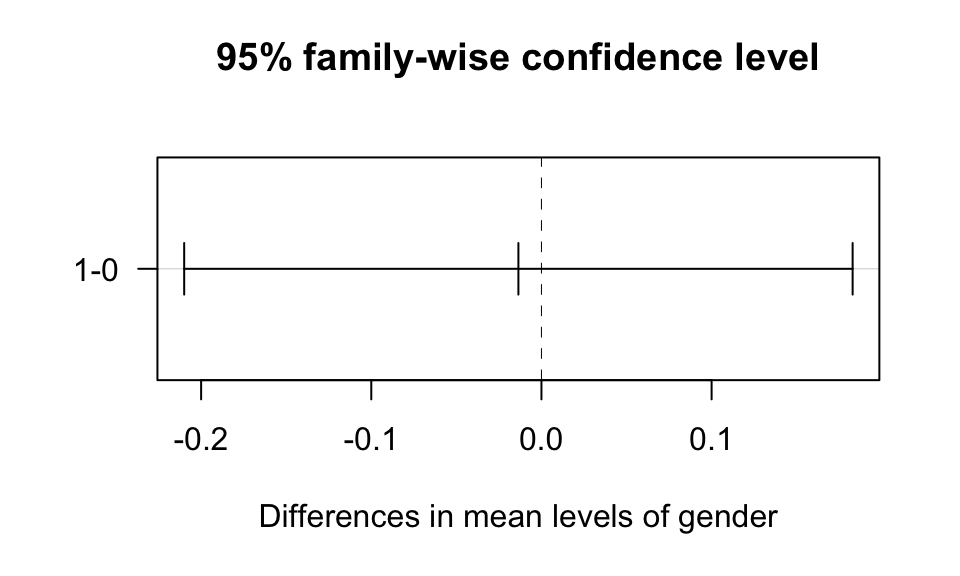
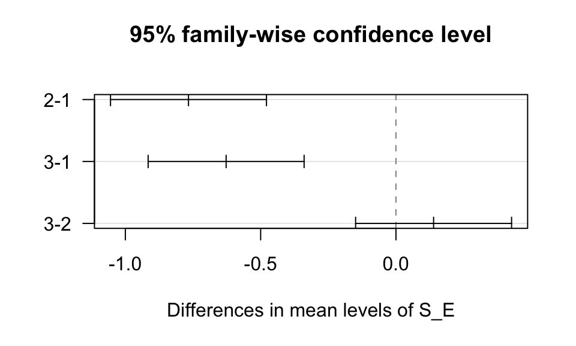
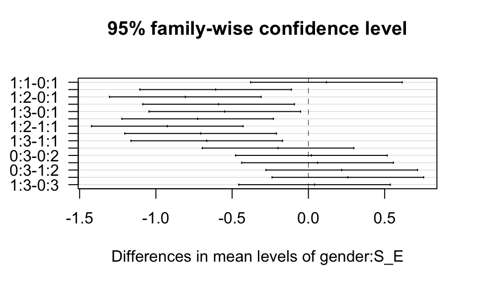
Scheffe Test
# Scheffe Post-Hoc Test
posthoc_scheffe <- emmeans(anova_result, pairwise ~ gender * S_E, adjust = "scheffe")
posthoc_scheffe$emmeans
gender S_E emmean SE df lower.CL upper.CL
0 1 3.63 0.122 156 3.39 3.87
1 1 3.75 0.122 156 3.51 3.99
0 2 3.03 0.122 156 2.79 3.27
1 2 2.83 0.122 156 2.59 3.07
0 3 3.05 0.122 156 2.81 3.29
1 3 3.09 0.122 156 2.85 3.33
Confidence level used: 0.95
$contrasts
contrast estimate SE df t.ratio p.value
gender0 S_E1 - gender1 S_E1 -0.1179 0.172 156 -0.685 0.9931
gender0 S_E1 - gender0 S_E2 0.6083 0.172 156 3.532 0.0333
gender0 S_E1 - gender1 S_E2 0.8071 0.172 156 4.686 0.0009
gender0 S_E1 - gender0 S_E3 0.5888 0.172 156 3.419 0.0444
gender0 S_E1 - gender1 S_E3 0.5485 0.172 156 3.185 0.0776
gender1 S_E1 - gender0 S_E2 0.7262 0.172 156 4.216 0.0045
gender1 S_E1 - gender1 S_E2 0.9251 0.172 156 5.371 0.0001
gender1 S_E1 - gender0 S_E3 0.7067 0.172 156 4.103 0.0065
gender1 S_E1 - gender1 S_E3 0.6664 0.172 156 3.869 0.0131
gender0 S_E2 - gender1 S_E2 0.1989 0.172 156 1.155 0.9307
gender0 S_E2 - gender0 S_E3 -0.0195 0.172 156 -0.113 1.0000
gender0 S_E2 - gender1 S_E3 -0.0598 0.172 156 -0.347 0.9997
gender1 S_E2 - gender0 S_E3 -0.2183 0.172 156 -1.268 0.8995
gender1 S_E2 - gender1 S_E3 -0.2586 0.172 156 -1.502 0.8120
gender0 S_E3 - gender1 S_E3 -0.0403 0.172 156 -0.234 1.0000
P value adjustment: scheffe method with rank 5 Voraussetzungen ANOVA
Statistische Voraussetzungen
Beim Testen der Voraussetzungen können wir entweder deskriptivstatistische oder inferenzstatistische Verfahren verwenden. Deskriptivstatistisch kann man die Verfahren mit Plots untersuchen (z.B. Residual Plots, QQ Plots). Inferenzstatistiche Verfahren werden mit Tests durchgeführt (z.B. Kolmogorov-Smirnov Test). Beide Herangehensweisen haben ihre Probleme: 1. Deskriptivstatistische Verfahren sind subjektiv 2. Inferenzstatistische Verfahren haben eine geringe Power in kleinen Stichproben, was dazu führt, dass sie Verletzungen nicht zeigen. In größeren Stichproben haben sie eine hohe Power und werden auch bei geringfügigen Verletzungen signifikant. Das ist ungünstig, da die Verletzungen vor allem in kleinen Stichproben relevant sind. In großen Stichproben und balancierten Designs sind Verfahren wie die ANOVA einigermaßen robust gegen einige der Verletzungen.
Ich persönlich würde die deskriptivstatistischen Verfahren empfehlen. Im Zweifel kann man diese in Kombination mit inferenzstatistischen Verfahren verwenden.
Was tun bei Verletzungen?
Verletzungen sollten immer transparent berichtet werden. Informiere dich darüber, wie sensibel das verwendete statistische Verfahren auf solche Verletzungen reagiert. Falls Korrekturen vorgenommen werden (z.B. robuste Tests, Transformationen), ist es sinnvoll, die Analyse mit und ohne Korrektur durchzuführen und beide Ergebnisse anzugeben. Ein robuster Effekt sollte sich unter beiden Bedingungen zeigen. Dies ist z.B. hilfreich, wenn unklar ist, ob Ausreißer das Ergebnis verzerren. Ergänzend können simulationsbasierte Verfahren wie Bootstrapping oder Randomization Tests eingesetzt werden. Diese reduzieren die Abhängigkeit von theoretischen Annahmen und können die Robustheit der Ergebnisse erhöhen.
Homoskedastizität (Varianzhomogenität)
Homoskedastizität ist die eine zentrale Annahme in der ANOVA: die Varianzen in den Gruppen sind gleich, bzw. ähnlich groß (“homogen”). Eine Verletzung der Homoskedastizität ist schwerwiegender wenn die Gruppen unterschiedlich groß sind.
Residual Plot
Um die Homoskedastizität zu überprüfen, erstellen wir einen Residual Plot. Die Residuen bezeichnen Abweichungen eines beobachteten Wertes vom vorhergesagten Wert. In der ANOVA ist das die Abweichung eines Wert \(y_{ij}\) vom jeweiligen Gruppenmittelwert \(\hat y_j\). Daher: \(e_{ij} = y_{ij} - \hat y_j\)
Wir wollen, dass die Varianz in allen Gruppen ähnlich groß ist. Daher schauen wir uns an, ob die Resiuden ähnlich groß sind. Zudem zeigt der Residual Plot potentielle Ausreißer.
# Extract residuals and fitted values
residuals <- residuals(anova_result)
fitted_values <- fitted(anova_result)
# Plot residuals against fitted values
plot(jitter(fitted_values), residuals, xlab = "Fitted Values", ylab = "Residuals",
main = "Residuals of Sub-Groups")
abline(h = 0, col = "red")
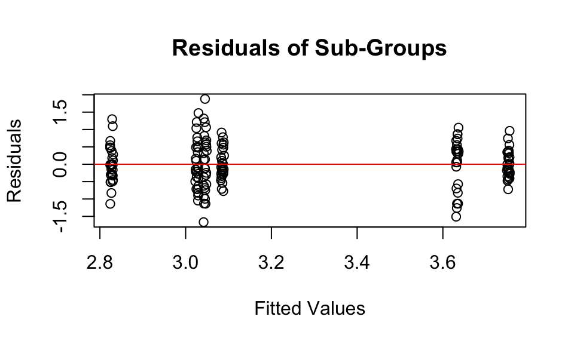
Siehe Figure 17 für einen Residual Plot in der Regression.
Levene’s Test
Alternativ können wir den Levene’s Test verwenden. Dieser testet die \(H_0\), dass die Varianzen der Gruppen homogen sind. Ein signifikanter Wert deutet darauf hin, dass die Varianzen heterogen sind, also eine Verletzung der Annahme der Homoskedastizität.
leveneTest(Wor ~ gender * S_E, data = df_wor)Levene's Test for Homogeneity of Variance (center = median)
Df F value Pr(>F)
group 5 3.6046 0.004105 **
156
---
Signif. codes: 0 '***' 0.001 '**' 0.01 '*' 0.05 '.' 0.1 ' ' 1Spherizität
Spherizität ist eine Erweiterung der Homoskedastizität bei Messwiederholungs-Desgins (mit Within-Subject Factor). Die Spherizität beschreibt, dass die Varianz der Differenzen zwischen den Messzeitpunkten konstant ist. Ein einfaches Beispiel wäre der IQ gemessen im Alter von 17, 18 und 30 Jahren. Die Messungen im Alter von 17 und 18 Jahren würden sich deutlich weniger unterscheiden (=geringere Varianz der Differenzen) als beispielsweise bei 18 und 30 Jahren.
\(H_0 = \sigma^2_{y_1 - y_2} = \sigma^2_{y_1 - y_3} = \sigma^2_{y_2 - y_3}\)
\(H_1 = \sigma^2_{y_1 - y_2} \not = \sigma^2_{y_1 - y_3} \not = \sigma^2_{y_2 - y_3}\)
Wenn wir uns die summary() einer ANOVA mit aov_ez() ausgeben, sehen wir zu erst die nicht-korrigierten Ergebnisse. Darunter wird uns bei Mauchly Tests for Sphericity eine Verletzung der Spherizität angezeigt (\(p<.05\)). Es wird jeweils ein Greenhouse-Geisser und Huynh-Feldt Epsilon zur Korrektur angegeben. Wenn wir uns einfach nur das aov_ez()-ANOVA Objekt ausgeben lassen, sind die Ergebnisse bei Verletzung der Spherizität automatisch korrigiert: Die Freiheitsgrade des F-Tests sind mit dem Greenhouse-Geisser Epsilon multipliziert.
anova_result <- aov_ez(id = "participant_id", dv = "wellbeing", within = "time",
anova_table = list(es = "pes"), data = df_3_long)
summary(anova_result)
Univariate Type III Repeated-Measures ANOVA Assuming Sphericity
Sum Sq num Df Error SS den Df F value Pr(>F)
(Intercept) 979899 1 139786 119 834.189 < 2.2e-16 ***
time 1257 2 14840 238 10.079 6.284e-05 ***
---
Signif. codes: 0 '***' 0.001 '**' 0.01 '*' 0.05 '.' 0.1 ' ' 1
Mauchly Tests for Sphericity
Test statistic p-value
time 0.77082 2.1388e-07
Greenhouse-Geisser and Huynh-Feldt Corrections
for Departure from Sphericity
GG eps Pr(>F[GG])
time 0.81355 0.000223 ***
---
Signif. codes: 0 '***' 0.001 '**' 0.01 '*' 0.05 '.' 0.1 ' ' 1
HF eps Pr(>F[HF])
time 0.8232387 0.0002087646anova_resultAnova Table (Type 3 tests)
Response: wellbeing
Effect df MSE F pes p.value
1 time 1.63, 193.62 76.65 10.08 *** .078 <.001
---
Signif. codes: 0 '***' 0.001 '**' 0.01 '*' 0.05 '+' 0.1 ' ' 1
Sphericity correction method: GG Normalverteilung
Tip
Die ANOVA ist einigermaßen robust gegen eine Verletzung der Normalverteilung, es sei denn die Normalverteilung ist in der Population sehr schief oder Gruppengrößen sind unterschiedlich groß. Hierbei ist es relevant, dass die Messwerte, bzw. Residuen, in den Gruppen normalverteilt sind, nicht die Daten allgemein (Stellen Sie sich bei drei Gruppen z.B. drei Normalverteilungen vor, die zum Teil überlappen. Die Daten wären nicht normalverteilt, in den Gruppen aber schon.)
Histogram
Mit einem Histogram pro Gruppe können wir die Annahme der Normalverteilung grob untersuchen. Hierfür können wir die Residuen oder die normalen Daten pro Gruppe verwenden.
ggplot(data = df_wor, mapping = aes(x = Wor)) +
geom_histogram(bins = 20, color = "black", fill = "steelblue") +
facet_wrap(~S_E) + # ein eigenes Histogram pro Gruppe
labs(title = "Histogram", y = "Häufigkeit")
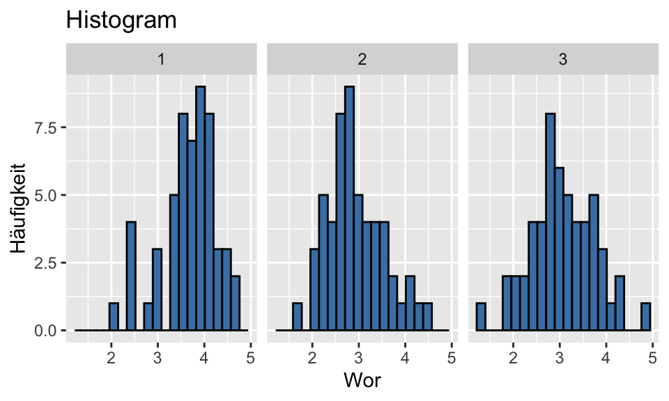
QQ-Plot
Die Normalverteilung können wir mit QQ-Plots testen. Im QQ-Plots wird die Verteilung der Residuen der Stichprobe (durch Punkte gekennzeichnet) mit der Normalverteilung (Strich) verglichen. Die Gerade kennzeichnet eine perfekte Normalverteilung. Je stärker die Punkte von der Linie abweichen, desto stärker weichen die Daten von der Normalverteilung ab.
# Wir haben die Residuen zuvor extrahiert: residuals <- residuals(anova_result)
df_wor$residual <- residuals
qqnorm(df_wor$residual, main = "QQ-Plot")
qqline(df_wor$residual)Das Package Rempsyc eine praktische Funktion für QQ-Plots. Hier können wir (bei Bedarf) auch einstellen, dass wir die Verteilungen der einzelnen Gruppen untersuchen wollen.
nice_qq(df_wor, variable = "residual", title = NULL)
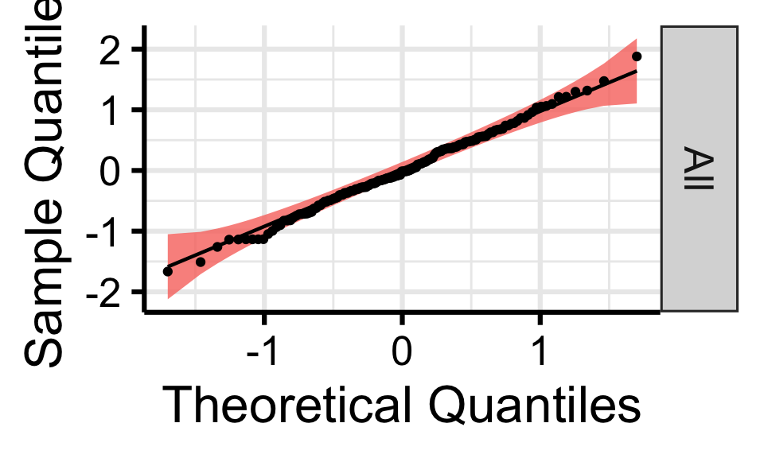
Shapiro Wilk Test
Als inferenzstatistischen Test können wir die Normalverteilung der Residuen mit dem Shapiro Wilk Test testen. Die Abweichungen in den Gruppen (=Residuen) müssen normalverteilt sein, nicht die Variable allgemein.
shapiro.test(residuals)
Shapiro-Wilk normality test
data: residuals
W = 0.9967, p-value = 0.9787Unabhängigkeit der Residuen
Diese Voraussetzung ist eher theoretischer Natur und ist verletzt, wenn relevante Information nicht im statistischen Modell enthalten ist. Zum Beispiel könnten wir den Effekt unterschiedlicher Lernmethoden (konventionell vs. interaktiv vs. digital gestützt) an 15 verschiedenen Schulen erheben. Die Leistungen der SchülerInnen sind nicht nur von den Lernmethoden sondern auch stark von der Schule abhängig. Ein solcher Clustereffekt wäre für eine normale ANOVA problematisch. Wir müssten komplexere Verfahren verwenden, um dies zu berücksichtigen. Wir überprüfen die Voraussetzung in erster Linie über das Forschungsdesign.
Ausreißer
Ausreißer können das Ergebnis der ANOVA stark beeinflussen. Wir können den Residual Plot (Figure 8) oder Box-Plot (Figure 3) nutzen, um Ausreißer zu identifizieren.
Tip
Das Ausschließen von Ausreißern ist ein kontroverses Thema. Im Zweifel lohnt es sich, zu untersuchen ob der Effekt auch ohne Ausreißer oder in einem rang-basierten Verfahren besteht. Zudem kann Bootstrapping verwendet werden, um die Robustheit der Ergebnisse zu bestärken.
Korrelation
Mittels cor() können wir den Korrelationskoeffizienten berechnen. Im Parameter use können wir angeben, wie wir mit fehlenden Werten (NA) umgehen wollen.
cor(df$Mathematiknote, df$Statistiknote, use = "complete.obs")[1] 0.3961497Mit cor.test() können wir auf Signifikanz testen. Zudem wird automatisch ein 95%-Konfidenzintervall ausgegeben
cor.test(df$Extraversion, df$Neurotizismus)
Pearson's product-moment correlation
data: df$Extraversion and df$Neurotizismus
t = -4.2578, df = 98, p-value = 4.738e-05
alternative hypothesis: true correlation is not equal to 0
95 percent confidence interval:
-0.5489247 -0.2154050
sample estimates:
cor
-0.3951064 cor_ex_neu <- cor.test(df$Extraversion, df$Neurotizismus, use = "complete.obs", method = "pearson")
r_value <- cor_ex_neu$estimate # Pearson-Korrelation (r)
p_value <- cor_ex_neu$p.value # p-value
ci_lower <- cor_ex_neu$conf.int[1] # Untere Grenze des 95% KI
ci_upper <- cor_ex_neu$conf.int[2] # Obere Grenze des 95% KIRangkorrelation
Im Parameter method können wir ebenfalls die Spearman-Korrelation und Kendall’s Tau auswählen, welche Rang-basiert sind.
cor.test(df$Mathematiknote, df$Statistiknote, method = "spearman")
Spearman's rank correlation rho
data: df$Mathematiknote and df$Statistiknote
S = 41643, p-value = 0.0002834
alternative hypothesis: true rho is not equal to 0
sample estimates:
rho
0.4076423 cor.test(df$Mathematiknote, df$Statistiknote, method = "kendall")
Kendall's rank correlation tau
data: df$Mathematiknote and df$Statistiknote
z = 3.6228, p-value = 0.0002914
alternative hypothesis: true tau is not equal to 0
sample estimates:
tau
0.3400417 Korrelationsmatrix
Es gibt verschiedene Möglichkeiten, eine Korrelations-Matrix oder Scatterplot-Matrix erstellen zu lassen:
- Die
cor()-Funktion mit mehreren Spalten eines Dataframes.
cor(df[, c("IQ", "Mathematiknote", "WMS4_delayed_recall")], method = "pearson", use = "pairwise.complete.obs") IQ Mathematiknote WMS4_delayed_recall
IQ 1.0000000 -0.3123390 0.1796224
Mathematiknote -0.3123390 1.0000000 -0.1920649
WMS4_delayed_recall 0.1796224 -0.1920649 1.0000000ggpairs()aus demGGally-Package.
Hier können wir uns eine Hälfte der Matrix als Scatterplot Matrix ausgeben lassen (unter lower). Die method gibt hier an, ob die Regressionslinie gerade sein soll (method = "lm") oder eine “lokale”, daher nicht-gerade Regressionslinie (method = "loess"). Letzteres ist sinnvoll, um die Voraussetzung der Linearität überprüfen will. Zusätzlich kann man sich den Standardfehler der Regressionslinie angeben lassen (se = TRUE).
ggpairs(df, columns = c("IQ", "Mathematiknote", "WMS4_delayed_recall"), lower = list(continuous = wrap("smooth",
method = "loess", se = TRUE)), upper = list(continuous = wrap("cor")))
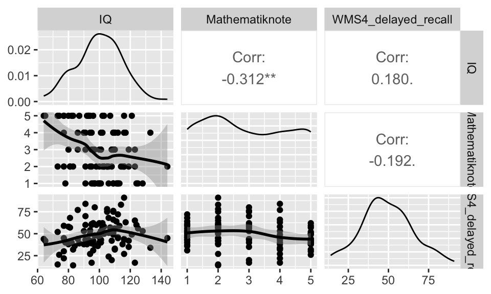
- Das
psych()-Package bietet eine ähnliche Funktion.
pairs.panels(df[, c("IQ", "Mathematiknote", "WMS4_delayed_recall")], ellipses = F)
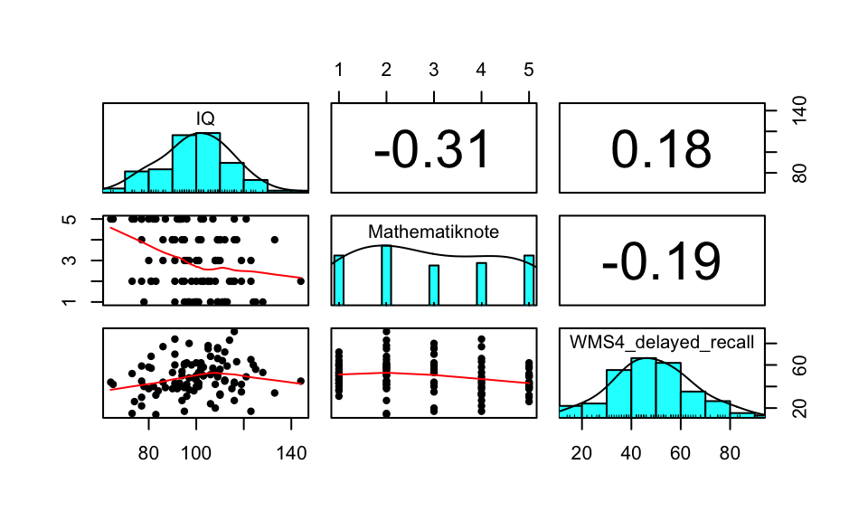
Regression
Einfache Lineare Regression
Die Syntax der Einfachen Linearen Regression ist im selben Schema wie zuvor: AV ~ UV. Über Summary können wir uns wieder die Ergebnisse ausgeben lassen.
Das unstandardisierte Regressionsgewicht von IQ ist unter Estimate zu finden. Daneben den zugehörigen Standardfehler, t-Wert und zugehörigen p-Wert. Das Multiple R-squared entspricht dem \(R^2\), der gesamten durch das Modell aufgeklärten Varianz.
model_simple_regression <- lm(WMS4_delayed_recall ~ IQ, data = df)
summary(model_simple_regression)
Call:
lm(formula = WMS4_delayed_recall ~ IQ, data = df)
Residuals:
Min 1Q Median 3Q Max
-36.422 -9.111 -0.354 11.430 38.923
Coefficients:
Estimate Std. Error t value Pr(>|t|)
(Intercept) 29.7954 10.7429 2.774 0.00664 **
IQ 0.1921 0.1063 1.808 0.07374 .
---
Signif. codes: 0 '***' 0.001 '**' 0.01 '*' 0.05 '.' 0.1 ' ' 1
Residual standard error: 15.9 on 98 degrees of freedom
Multiple R-squared: 0.03226, Adjusted R-squared: 0.02239
F-statistic: 3.267 on 1 and 98 DF, p-value: 0.07374Die standardisierten Regressionskoeffizienten, also der \(\beta\)-Koeffizient, werden leider nicht automatisch mit ausgegeben. Mit dem Package lm.beta können wir diese bekommen. In der einfachen linearen Regression sind diese identisch mit der Pearson-Korrelation. Die ist in der MLR nicht der Fall, es sei denn die Prädiktoren haben keine gemeinsame Varianz.
lm.beta(model_simple_regression)
Call:
lm(formula = WMS4_delayed_recall ~ IQ, data = df)
Standardized Coefficients::
(Intercept) IQ
NA 0.1796224 cor(df$IQ, df$WMS4_delayed_recall)[1] 0.1796224Wir können uns auch die Übersicht über das gesamte Model inkl. der standardisierten Regressionskoeffizienten unter Standardized ausgeben lassen:
summary(lm.beta(model_simple_regression))
Call:
lm(formula = WMS4_delayed_recall ~ IQ, data = df)
Residuals:
Min 1Q Median 3Q Max
-36.422 -9.111 -0.354 11.430 38.923
Coefficients:
Estimate Standardized Std. Error t value Pr(>|t|)
(Intercept) 29.7954 NA 10.7429 2.774 0.00664 **
IQ 0.1921 0.1796 0.1063 1.808 0.07374 .
---
Signif. codes: 0 '***' 0.001 '**' 0.01 '*' 0.05 '.' 0.1 ' ' 1
Residual standard error: 15.9 on 98 degrees of freedom
Multiple R-squared: 0.03226, Adjusted R-squared: 0.02239
F-statistic: 3.267 on 1 and 98 DF, p-value: 0.07374Das Package rempsyc bietet nützliche Funktionen, um Ergebnis-Tabellen zu erstellen. Diese sind zum Großteil APA-konform. Ich rate jedoch, das Format bei Verwendung noch einmal zu überprüfen.
model_slr_results <- nice_lm(model_simple_regression)
model_slr_results[2] <- "IQ" # IQ als Prädiktor
model_slr_results <- model_slr_resultsmodel_slr_results <- nice_table(model_slr_results, title = c("Tabelle 1", "Zusammenhang von Gedächtnisfähigkeit (verzögerte Wiedergabe) und Intelligenz"),
note = c(paste("Diese Tablle ist als Beispiel gedacht. Alle Zusammenhänge sind frei erfunden.",
sep = " "), "* p < .05, ** p < .01, *** p < .001"))
# Um Tabelle als Word-Datei zu speichern
# flextable::save_as_docx(model_slr_results, path = 'model_slr_results.docx')
model_slr_resultsTabelle 1 | |||||||
|---|---|---|---|---|---|---|---|
Zusammenhang von Gedächtnisfähigkeit (verzögerte Wiedergabe) und Intelligenz | |||||||
Dependent Variable | Predictor | df | b | t | p | sr2 | 95% CI |
WMS4_delayed_recall | IQ | 98 | 0.19 | 1.81 | .074 | .03 | [0.00, 0.10] |
Note. Diese Tablle ist als Beispiel gedacht. Alle Zusammenhänge sind frei erfunden. | |||||||
* p < .05, ** p < .01, *** p < .001 | |||||||
Multiple Lineare Regression
\[Y_i = \alpha + \beta_1 \cdot x_{i1} + \beta_2 \cdot x_{i2} + \beta_3 (x_{i1} \cdot x_{i2}) + \epsilon_i\]
Die Syntax für die MLR bleibt gleich: wir fügen weiter Prädiktoren (UVs) mit + ein, sowie eine Interaktion durch *.
model_mlr <- lm(WMS4_delayed_recall ~ Mathematiknote + IQ + Mathematiknote * IQ,
data = df)
model_mlr_stan <- summary(lm.beta(model_mlr)) # für standardisiertes Regressionsgewicht
model_mlr_stan
Call:
lm(formula = WMS4_delayed_recall ~ Mathematiknote + IQ + Mathematiknote *
IQ, data = df)
Residuals:
Min 1Q Median 3Q Max
-35.380 -9.335 -1.611 10.015 37.722
Coefficients:
Estimate Standardized Std. Error t value Pr(>|t|)
(Intercept) 25.44067 NA 26.77773 0.950 0.345
Mathematiknote 2.86489 0.25765 7.37984 0.388 0.699
IQ 0.28742 0.27134 0.25903 1.110 0.270
Mathematiknote:IQ -0.04609 -0.39256 0.07405 -0.622 0.535
Residual standard error: 15.85 on 93 degrees of freedom
(3 observations deleted due to missingness)
Multiple R-squared: 0.05706, Adjusted R-squared: 0.02665
F-statistic: 1.876 on 3 and 93 DF, p-value: 0.139model_mlr_table <- tidy(model_mlr_stan)
colnames(model_mlr_table) <- c("Variable", "b", "β", "SE", "t", "p") # '\u03B2' kann statt β verwendet werden
model_mlr_table# A tibble: 4 × 6
Variable b β SE t p
<chr> <dbl> <dbl> <dbl> <dbl> <dbl>
1 (Intercept) 25.4 NA 26.8 0.950 0.345
2 Mathematiknote 2.86 0.258 7.38 0.388 0.699
3 IQ 0.287 0.271 0.259 1.11 0.270
4 Mathematiknote:IQ -0.0461 -0.393 0.0741 -0.622 0.535nice_table(model_mlr_table, title = c("Tabelle 2", "Zusammenhang von Gedächtnisfähigkeit (verzögerte Wiedergabe), Mathematik und Intelligenz"),
note = c(paste("Diese Tablle ist als Beispiel gedacht. Alle Zusammenhänge sind frei erfunden.",
sep = " "), "* p < .05, ** p < .01, *** p < .001"))Tabelle 2 | |||||
|---|---|---|---|---|---|
Zusammenhang von Gedächtnisfähigkeit (verzögerte Wiedergabe), Mathematik und Intelligenz | |||||
Variable | b | β | SE | t | p |
(Intercept) | 25.44 | 26.78 | 0.95 | .345 | |
Mathematiknote | 2.86 | 0.26 | 7.38 | 0.39 | .699 |
IQ | 0.29 | 0.27 | 0.26 | 1.11 | .270 |
Mathematiknote:IQ | -0.05 | -0.39 | 0.07 | -0.62 | .535 |
Note. Diese Tablle ist als Beispiel gedacht. Alle Zusammenhänge sind frei erfunden. | |||||
* p < .05, ** p < .01, *** p < .001 | |||||
Beim Vorliegen von diskreten Prädiktoren verweise ich auf das Kaptiel “MLR mit diskreten Prädiktor”.
Voraussetzungen Regression
Die folgende Abbildung zeit die Relevanz der Prüfung der Voraussetzungen in der Regression. Jeder der vier Datensätze verfügt über die selbe Regressionsgerade und \(R^2 = 0.67\). Links oben (\(y_1\)) ist keine der Voraussetzungen verletzt. Hier sind jedoch nicht alle Voraussetzungen abgebildet.

Ascombe’s Quartett auf Wikipedia
{kind=link}
Statistische Voraussetzungen
Beim Testen der Voraussetzungen können wir entweder deskriptivstatistische oder inferenzstatistische Verfahren verwenden. Deskriptivstatistisch kann man die Verfahren mit Plots untersuchen (z.B. Residual Plots, QQ Plots). Inferenzstatistiche Verfahren werden mit Tests durchgeführt (z.B. Kolmogorov-Smirnov Test). Beide Herangehensweisen haben ihre Probleme: 1. Deskriptivstatistische Verfahren sind subjektiv 2. Inferenzstatistische Verfahren haben eine geringe Power in kleinen Stichproben, was dazu führt, dass sie Verletzungen nicht zeigen. In größeren Stichproben haben sie eine hohe Power und werden auch bei geringfügigen Verletzungen signifikant. Das ist ungünstig, da die Verletzungen vor allem in kleinen Stichproben relevant sind. In großen Stichproben und balancierten Designs sind Verfahren wie die ANOVA einigermaßen robust gegen einige der Verletzungen.
Ich persönlich würde die deskriptivstatistischen Verfahren empfehlen. Im Zweifel kann man diese in Kombination mit inferenzstatistischen Verfahren verwenden.
Was tun bei Verletzungen?
Verletzungen sollten immer transparent berichtet werden. Informiere dich darüber, wie sensibel das verwendete statistische Verfahren auf solche Verletzungen reagiert. Falls Korrekturen vorgenommen werden (z.B. robuste Tests, Transformationen), ist es sinnvoll, die Analyse mit und ohne Korrektur durchzuführen und beide Ergebnisse anzugeben. Ein robuster Effekt sollte sich unter beiden Bedingungen zeigen. Dies ist z.B. hilfreich, wenn unklar ist, ob Ausreißer das Ergebnis verzerren. Ergänzend können simulationsbasierte Verfahren wie Bootstrapping oder Randomization Tests eingesetzt werden. Diese reduzieren die Abhängigkeit von theoretischen Annahmen und können die Robustheit der Ergebnisse erhöhen.
Homoskedastizität
Residual Plot
Ähnlich wie in der ANOVA können wir einen Residual Plot verwenden um die Homoskedastizität zu überprüfen (s. Figure 8). Die Residuen sind Abweichungen eines beobachteten Wertes von dem vorhergesagten Wert. In der Regression ist das die Abweichung eines Wert \(y_{i}\) vom bedingten Erwartungswert \(E(y_i | X_i = x_i)\). Konkret bedeutet das die Abweichung eines Werts von der Regressionsgeraden (in y). Die Regressionsgerade gibt an, welchen y-Wert wird basierend auf dem x-Wert erwarten würden (\(E(y_i | X_i = x_i)\)). Daher: \(e_{i} = y_{i} - \hat y_i\). Im nächsten Schritt standardisieren wir die Residuen. Hier können wir uns die standardisierten Residuen einfach ausgeben lassen rstandard(model_mlr).
Ist die Varianzhomogenität gegeben, streuen die Werte zufällig um null. In diesem Fall zeigt sich das darin, dass wir keine Muster in den Residuen erkennen. Eine Verletzung anderer Voraussetzungen (Linearität, Unabhängigkeit der Messwerte, Ausreißer) kann sich ebenfalls im Residual Plot zeigen.
# Extract standardized residuals and fitted values
residuals <- rstandard(model_mlr)
fitted_values <- fitted(model_mlr)
# Plot residuals against fitted values
plot(jitter(fitted_values), residuals, xlab = "Fitted Values", ylab = "Residuals",
main = "Residuals")
abline(h = 0, col = "red")
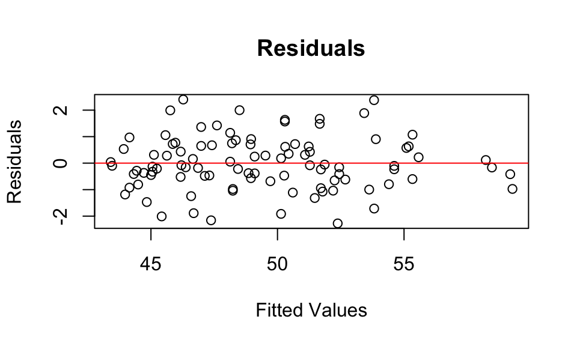
Hinweis: der Code für den obigen Residual Plot ist identisch zum Residual Plot der ANOVA (Figure 8).
Linearität
Um die Linearität zu überprüfen, können wir uns für die untersuchten Zusammenhänge Scatterplots mit lokalen Regressionslinien (“loess”) untersuchen. Hier ist es empfehlenswert, sich den Scatterplot aus beiden Richtungen ausgeben zu lassen (beide Variablen jeweils auf der x und y-Achse). Wir können die Funktion zur Korrelationsmatrix aus Figure 12 anpassen, um die obere Hälfte ebenfalls mit Scatterplots zu füllen.
Bei einer starken Verletzung oder bei non-linearen Zusammenhängen, können wir komplexere Verfahren (z.B. non-lineare Regression, quadratische Regression) verwenden.
ggpairs(df, columns = c("IQ", "Mathematiknote", "WMS4_delayed_recall"), lower = list(continuous = wrap("smooth",
method = "loess", se = TRUE)), upper = list(continuous = wrap("smooth", method = "loess",
se = TRUE)))
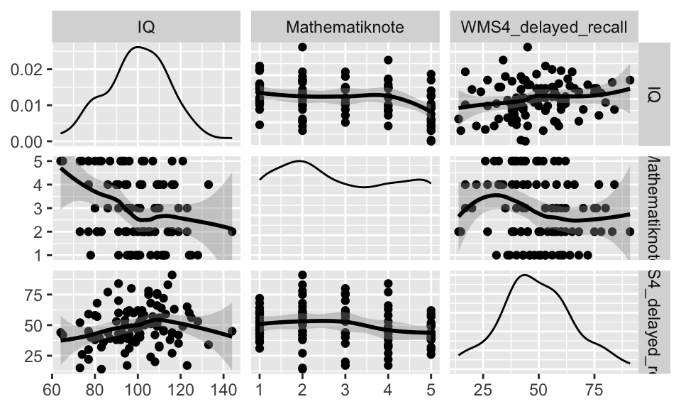
Normalverteilung der Residuen
Um die Normalverteilung der Residuen zu untersuchen, können wir wieder ein Histogram und einen QQ-Plot der Residuen erstellen. Der Code ist wieder identisch zum QQ-Plot in der ANOVA (Figure 10).
# Wir extrahieren die residuen
residuals_mult_regression <- residuals(model_mlr)
qqnorm(residuals_mult_regression, main = "QQ-Plot")
qqline(residuals_mult_regression)
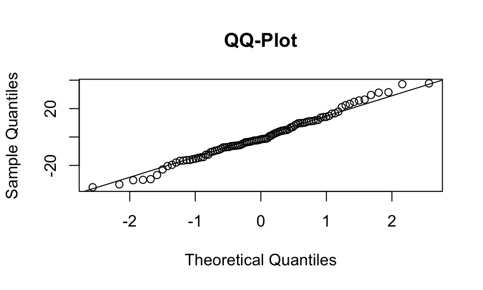
hist(rstandard(model_mlr))
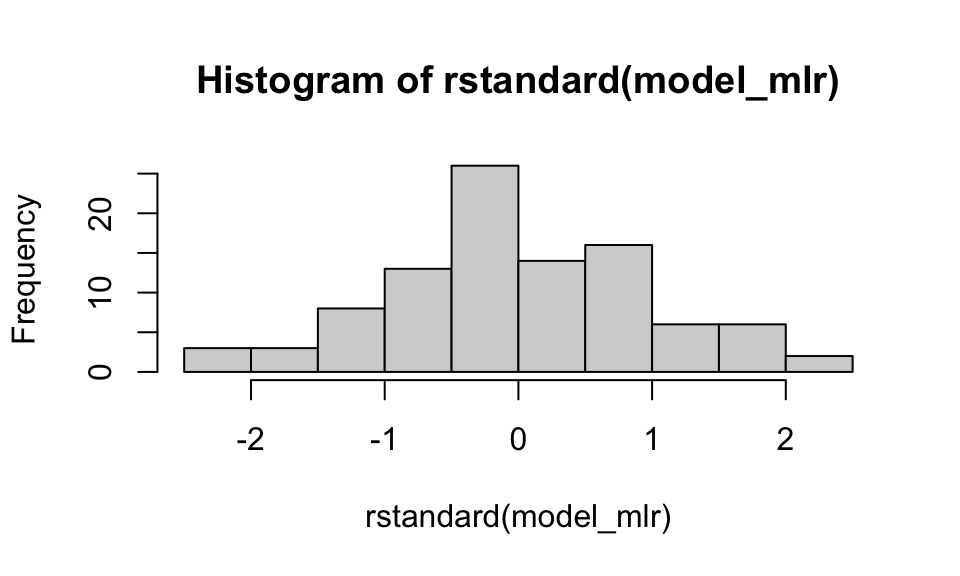
Alternativ können wir die Schiefe und Kurtosis der Resiuden überprüfen. Bei Vorliegen der Normalverteilung sind diese Werte nahe Null. Die absoluten Werte sollten \(\leq 1\) sein. Die Kurtosis kann etwas höher ausfallen, sollte jedoch \(\leq 5\) sein.
Schiefe:
describe(residuals_mult_regression)$skew[1] 0.148183Kurtosis:
describe(residuals_mult_regression)$kurtosis[1] -0.1519349Unabhöngigkeit der Residuen
Das Regressionsmodell geht davon aus, dass die Fehler (Residuen) unkorreliert sind. Wenn diese korreliert sind, könnte in den Daten eine Beziehung vorliegen, welche wir im Modell nicht erfasst haben. Das würde dazu führen, dass wir verzerrte Standardfehler für unsere Regressionskoeffizienten erhalten. Insgesamt empfiehlt es sich, die Unabhänigkeit der Residuen visuell im Residuenplot (Figure 17) zu untersuchen. Wir wollen möglichst kein systematisches Muster erkennen.
Zusätzlich kann der Durbin-Watson Test verwendet werden, um die Abhängigkeit aufeinander folgender Residuen zu testen. Dieser testet die \(H_0\), ob eine Autokorrelation der Residuen vorliegt.
durbinWatsonTest(model_mlr) lag Autocorrelation D-W Statistic p-value
1 0.1740918 1.646165 0.098
Alternative hypothesis: rho != 0Ausreißer
Ausreißer können einen starken Einfluss auf die Regression haben (s. Figure 16). Wir können sie ebenfalls im Residual Plot (Figure 17) oder in einem Scatterplot (Figure 18) identifizieren. Alternativ können wir festgelegte Kriterien anwenden, beispielsweise Werte ausschließen, welche z.B. 3 Standardabweichungen vom Mittelwert entfernt sind.
# Mittelwert und Standardabweichung berechnen
mean_value <- mean(df$Alter)
sd_value <- sd(df$Alter)
# Absoluter Abstand mehr als 3 SD
df$outlier <- abs(df$Alter - mean_value) > (3 * sd_value)
# Optional: Visualize outliers
ggplot(df, aes(x = Alter, y = Offenheit)) + geom_point(aes(color = outlier), alpha = 0.6) +
scale_color_manual(values = c("black", "red"))
Multikollinearität
Multikollinearität ist nur relevant, wenn wir mehrere Prädiktoren verwenden. Multikollinearität liegt vor, wenn sich unsere Prädiktoren einen erheblichen Anteil an gemeinsamer Varianz teilen. Dies kann dazu führen, dass wir einen Effekte nicht mehr dem jeweiligen Prädiktor zuordnen können.
Zu erst sollten wir in einer Korrelationsmatrix überprüfen (s. Figure 12), wie sehr unsere Prädiktoren korreliert sind. Hohe Korrelationen sind ein Indikator für Multikollinearität.
Zudem können wir den Variance Inflation Factor (VIF) der Prädiktoren überprüfen. Dieser wird folgendermaßen berechnet: \(VIF_1 = \frac {1}{1- R^2_{1 \cdot 2 ... p}}\). 1 geteilt durch die Varianz im Prädiktor, welche nicht durch die andere Prädiktoren erklärt werden kann. [check notation] Der VIF hat seinen Namen daher, dass er im Standardfehler des Regressionskoeffizienten enthalten ist und die Varianz, also auch den Standardfehler, in die Höhe treiben kann (“Inflation”). Dies kann dazu führen, dass wir Varianz im Modell aufklälren können (\(R^2 \geq 0\)), aber keiner der Präfiktoren signifikant wird.
Häufig genannte Cutoff-Werte für den VIF sind \(\leq\) 5 und \(\leq\) 10. VIF \(\leq\) 5 gilt als gut, VIF \(\leq\) 10 gelten i.d.R. als okay.
vif_values <- vif(model_mlr, type = "predictor")
vif_values GVIF Df GVIF^(1/(2*Df)) Interacts With Other Predictors
Mathematiknote 1 3 1 IQ --
IQ 1 3 1 Mathematiknote -- Die Toleranz wird in SPSS zusätzlich zum VIF angegeben. Sie gibt den Nenner des VIF an und kann daher durch \(\frac{1}{VIF}\) ermittelt werden.
vif_values <- vif_values[1][[1]]
tolerance_values <- 1/vif_values[1]
vif_table <- data.frame(VIF = round(vif_values, 2), Toleranz = round(tolerance_values,
2))
nice_table(vif_table, title = c("Tabelle 3", "VIF und Toleranz"))Tabelle 3 | |
|---|---|
VIF und Toleranz | |
VIF | Toleranz |
1.00 | 1.00 |
1.00 | 1.00 |
Vorgehensweisen bei Multikollinearität
Beim Vorliegen von Multikollinearität können wir überlegen, Prädiktoren aus dem Modell zu entfernen oder mehrere Prädiktoren zu einem zusammenzufassen (z.B. Principal Component Anylsis, PCA).
Regression mit speziellen Prädiktoren
MLR mit diskreten Prädiktor
Hierfür müssen wir sogennante Dummy-Variablen erstellen. Hat der diskrete Prädiktor zwei Ausprägungen, legen wir eine der Kategorien als Referenzkategorie fest. Die Referenzkategorie kann frei gewählt werden, wir müssen uns jedoch für die Interpretation merken, welche Ausprägung wir als Referenz festgelegt haben.
\(D_i = 0\): Person \(i\) gehört zur Referenzkategorie \(D_i = 1\): Person \(i\) gehört nicht zur Referenzkategorie
# Rekodieren zu Dummy Variable
df <- df %>%
mutate(experimentalgruppe = case_when(bedingung == "Experimental" ~ 1, bedingung ==
"Kontroll" ~ 0, TRUE ~ NA_real_ # Handles missing or unexpected values
))$Y_i = + _{kontrollgruppe}
model_dummy_regression <- lm(Extraversion ~ experimentalgruppe + Neurotizismus +
experimentalgruppe * Neurotizismus, data = df)
summary(model_dummy_regression)
Call:
lm(formula = Extraversion ~ experimentalgruppe + Neurotizismus +
experimentalgruppe * Neurotizismus, data = df)
Residuals:
Min 1Q Median 3Q Max
-22.6898 -5.8595 -0.0392 7.0103 24.4838
Coefficients:
Estimate Std. Error t value Pr(>|t|)
(Intercept) 41.71388 4.10540 10.161 < 2e-16 ***
experimentalgruppe 0.16651 6.01442 0.028 0.97797
Neurotizismus -0.36178 0.13056 -2.771 0.00674 **
experimentalgruppe:Neurotizismus -0.06386 0.18989 -0.336 0.73738
---
Signif. codes: 0 '***' 0.001 '**' 0.01 '*' 0.05 '.' 0.1 ' ' 1
Residual standard error: 9.371 on 94 degrees of freedom
(2 observations deleted due to missingness)
Multiple R-squared: 0.1625, Adjusted R-squared: 0.1357
F-statistic: 6.078 on 3 and 94 DF, p-value: 0.0007943# Add predicted values from the model
df$ex_predicted <- predict(model_dummy_regression, newdata = df)
# Plot mit zwei separaten Regressionslinien
ggplot(df, aes(x = Neurotizismus, y = Extraversion, color = factor(experimentalgruppe))) +
geom_point(alpha = 0.6) + # Scatter points
geom_line(data = df, aes(y = ex_predicted), linewidth = 1.2) + # Regression lines
scale_color_manual(values = c("blue", "red"), labels = c(0, 1)) +
labs(x = "Neurotizismus", y = "Extraversion", color = "experimentalgruppe") +
theme_minimal()
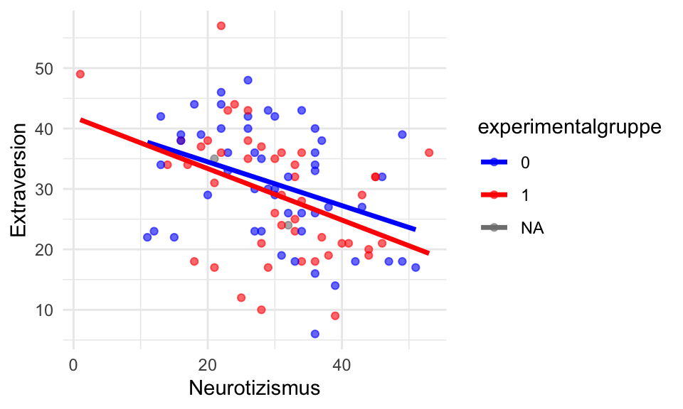
das Beispiel ergibt wenig Sinn evtl. auf gesamte Range anpassen
Quadratische Regression
Wenn zwischen Prädiktor und Kriterium ein U-förmiger Zusammenhang besteht, kann es sinnvoll sein, den quadrierten Prädiktor in das Modell aufzunehmen. Idealerweise ist ein solcher Zusammenhang a-priori formuliert und theoretisch begründet. Alternativ kann bei einer Verletzung der Linearitätsannahme auch explorativ geprüft werden, ob ein nicht-linearer Zusammenhang vorliegt. Non-lineare Zusammenhänge in der Stichprobe können auch zufallsbedingt sein. Daher ist es nicht immer sinnvoll, einen explorativ gefundenen non-linearen Zusammenhang als solchen zu interpretieren. Wir können theoretisch auch Prädiktoren höherer Ordnung (bsp. \(x_1^3\) oder \(x_1^4\)) ins Modell mit aufnehmen. In der Psychologie sind solche Zusammenhänge allerdings sehr selten und wir laufen Gefahr zu “overfitten”, also unsystematische Varianz als systematisch zu interpretieren.
Die folgende Scatterplot-Matrix zeigt, warum man die Linearität am besten aus beiden Perspektiven – also mit jeweils vertauschter x- und y-Achse – beurteilen sollte. Der U-förmige Zusammenhang zwischen der Leistung (correct_items) und dem Vertrauen in die eigene Kompetenz (confidence) wird in der Ansicht [1,3] mit correct_items auf der x-Achse deutlich klarer als in der Ansicht [3,1].
ggpairs(df, columns = c("correct_items", "IQ", "confidence"), lower = list(continuous = wrap("smooth",
method = "loess", se = TRUE)), upper = list(continuous = wrap("smooth", method = "loess",
se = TRUE)))
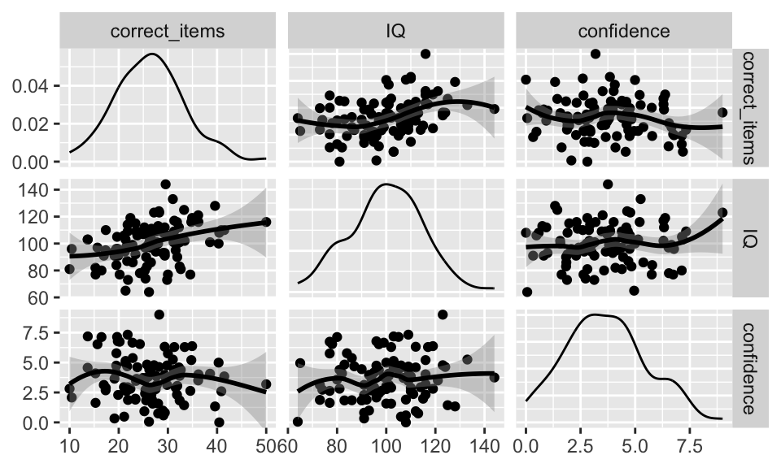
Im statistischen Modell verwenden wir idR. den herkömmlichen Prädiktor (\(\beta_1x_1\)) und seine quadratische Variante (\(\beta_2 x_1^2\)). Die Interpretation des quadratischen Regressionskoeffizienten ist nicht mehr intutiv. Wenn \(\beta_2 > 0\) ist der non-lineare Zusammenhang U-förmig. Wenn \(\beta_2 < 0\) ist der non-lineare Zusammenhang umgekehrt-U-förmig (wie im folgenden Beispiel). Dies ist die selbe Logik wie bei Parabeln in der Mathematik (\(y = x^2\) vs. \(y = -x^2\))
\[Y_i = \alpha + \beta_1 \cdot x_{i1} + \beta_2 \cdot x_{i2}^2 + \beta_3 \cdot x_{i3} + \epsilon_i\]
model_mlr_squared <- lm(correct_items ~ confidence + I(confidence^2) + IQ, data = df)
summary(lm.beta(model_mlr_squared))
Call:
lm(formula = correct_items ~ confidence + I(confidence^2) + IQ,
data = df)
Residuals:
Min 1Q Median 3Q Max
-16.0131 -4.8514 -0.5539 3.8250 20.1975
Coefficients:
Estimate Standardized Std. Error t value Pr(>|t|)
(Intercept) 9.03685 NA 4.94472 1.828 0.070720 .
confidence 0.54161 0.14243 1.23441 0.439 0.661819
I(confidence^2) -0.12976 -0.28081 0.15000 -0.865 0.389162
IQ 0.17549 0.37213 0.04433 3.958 0.000145 ***
---
Signif. codes: 0 '***' 0.001 '**' 0.01 '*' 0.05 '.' 0.1 ' ' 1
Residual standard error: 6.621 on 96 degrees of freedom
Multiple R-squared: 0.1548, Adjusted R-squared: 0.1284
F-statistic: 5.861 on 3 and 96 DF, p-value: 0.001017Bootstrapping
Bootstrapping ist eine “Resampling”-Methode. Das bedeutet wir nutzen die vorliegende Stichprobe, um mehrere neue Stichproben zu ziehen. Wir mit Zurücklegen, das heißt eine Person wird in einer neuen Stichprobe auch mehrere male oder gar nicht vorkommen. In diesen Stichproben berechnen wir anschließen eine Statistik, sowie einen Mittelwert oder eine Effektgröße. Nun können wir uns anschauen, wie die Statistik in den Stichproben verteilt ist. Daher nutzen wir Bootstrapping, um die Präzision von Parameterschätzungen bestimmen.
Meistens lassen wir uns ein 95%-Konfidenzintervall für einen Parameter ausgeben. Wie bei herkömmlichen Konfidenzintervallen gilt: …
# Define function to compute F-statistic
boot_anova <- function(data, indices) {
sample_data <- data[indices, ] # Resample data
anova_result <- aov(wellbeing ~ therapy, data = sample_data)
return(summary(anova_result)[[1]]["therapy", "F value"]) # Extract F-value
}
# Apply bootstrapping with 1000 resamples
boot_result_anova <- boot(df_3_long, statistic = boot_anova, R = 1000)
# View bootstrapped F-distribution
print(boot_result_anova)
ORDINARY NONPARAMETRIC BOOTSTRAP
Call:
boot(data = df_3_long, statistic = boot_anova, R = 1000)
Bootstrap Statistics :
original bias std. error
t1* 23.5499 0.8528612 9.453661Notes & footnotes
- auf type 3 sum of squares eingehen?
- auf empirische SD eingehen? [^Footnote]
- long format [^Footnote]
- evtl. darauf eingehen wie man bei MW eine ID hinzufügt
- geplante Kontraste theoretische Fundierung
- die Datensätze sollten aktualisiert werden
- packages sollten speziell nochmal genannt werden, bevor sie genutzt werden